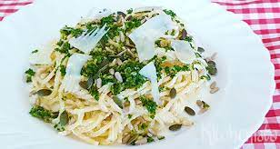

Pasta gremolata met ricotta

Ingredienten
- 500g farfalle
- 1 el pijnboonpitten
- 1 teentje knoflook
- 1 citroenschill
- 250g ricotta
- Handje bladpeterselie
Bereiding
- Kook de pasta beetgaar in een ruime hoeveelheid gezouten water.
- Snipper de peterselie en de knoflook. Vermeng ze met de geraspte citroenschill.
- Schep de ricota door de warme patse en verdeel over de borden. Bestrooi met gremolata en werk af met
pijnboonpitten